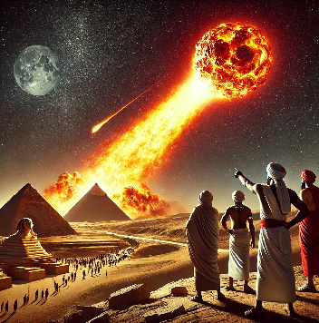
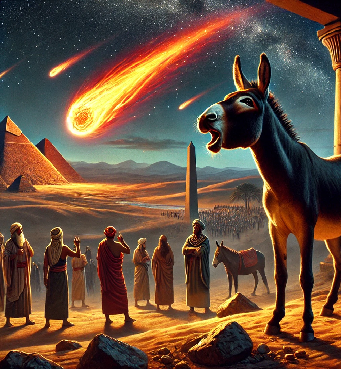
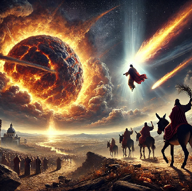
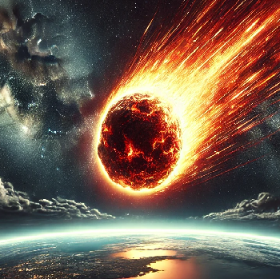
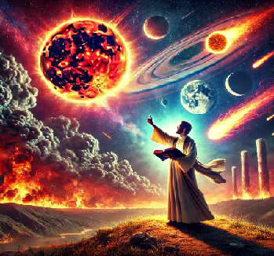
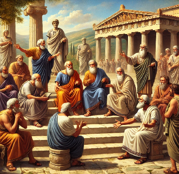
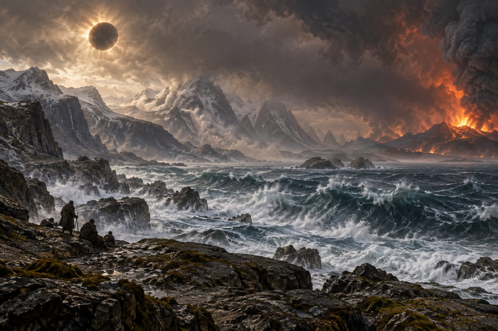
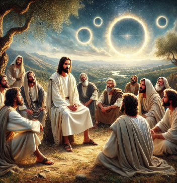
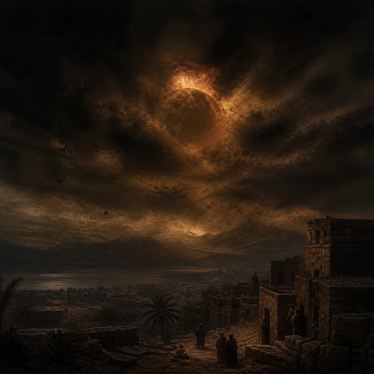

circa 2100 a.C.
Crisi egizia, mesopotamica e tradizioni del Diluvio
Primo Periodo Intermedio, lamentazioni sumere e tradizioni asiatiche vengono confrontati entro una finestra cronologica ampia.
Un fenomeno cosmico di cui parlano antiche scritture che ha lasciato tracce del suo passaggio.
Un'asteroide di piccole dimensioni, qualche centinaio di metri, che sfiora l'atmosfera incendiandola senza cadere sulla Terra.
Impatti che si sono ripetuti ciclicamente con intervalli di circa 500 anni.
Quelli documentati dal 3000 a.C. al 600 a.C. sono la causa di molti diluvi.
Per il suo comportamento anomalo, veniva ritenuto strumento di Dio.
Da dove iniziare
Una guida breve distingue ciò che dichiarano le fonti antiche dalla ricostruzione fisica proposta dal progetto, presenta le date candidate e indica gli elementi che potrebbero confermare oppure smentire l'ipotesi.
Che cos'è Fetonte? Metodo, fonti e ipotesiCronologia audiovisiva
Nel corso della ricerca abbiamo individuato diverse finestre cronologiche nelle quali potrebbe collocarsi uno dei presunti passaggi di Fetonte il Distruttore. Non sono date già dimostrate: sono ipotesi di lavoro da verificare confrontando fonti indipendenti, cronologie e tracce materiali.
A ciascuna di queste fasi dedichiamo una serie di video e studi di approfondimento. Un documento alla volta, esaminiamo testi antichi, traduzioni, dati archeologici, distribuzione geografica e spiegazioni alternative, distinguendo ciò che è attestato dalle interpretazioni possibili e dalle ipotesi ancora speculative.
circa 2100 a.C.
Primo Periodo Intermedio, lamentazioni sumere e tradizioni asiatiche vengono confrontati entro una finestra cronologica ampia.
circa 1650 a.C.
La ricerca esamina possibili rapporti fra catastrofi levantine, mobilità delle popolazioni e ascesa degli Hyksos.
circa 1200 a.C.
Ugarit, incendi, crisi climatica e Popoli del Mare sono studiati come elementi di un quadro ancora controverso.
La serie attualmente in corso è dedicata al collasso dell'età del Bronzo, una crisi che tra la fine del XIII e l'inizio del XII secolo a.C. coinvolse regni e città del Mediterraneo orientale.
Primo episodio: Ugarit 1223 a.C.: l'eclissi che forse non era un'eclissi.
Secondo episodio: Fetonte e gli incendi del Tardo Bronzo: un unico evento?
Ultimo episodio: L'Iliade conserva la memoria di una catastrofe? Troia, Apollo e Fetonte.
Esamina tutte le date e guarda i video3 Nefi 8–11 · circa 34 d.C. nella cronologia del racconto
Il Libro di Mormon presenta una delle descrizioni più articolate associate dal progetto al possibile passaggio del Distruttore. La narrazione procede come il resoconto di spettatori: una tempesta senza precedenti, tuoni capaci di scuotere la terra, fulmini, incendi, città sommerse o sepolte, vortici, fratture del suolo e infine una tenebra così densa da impedire qualsiasi luce per tre giorni.
Nel racconto, la catastrofe accompagna la morte di Cristo. Dopo il silenzio e l'oscurità, i sopravvissuti si riuniscono presso il tempio nel paese di Abbondanza. Odono una voce dal cielo e vedono un uomo vestito di bianco discendere e fermarsi in mezzo a loro: «Ecco, io sono Gesù Cristo» (3 Nefi 11,7–10).
Per il progetto, la sequenza suggerisce un possibile schema comune: manifestazione del Distruttore, sconvolgimento della superficie, oscuramento atmosferico e successiva discesa dal cielo della figura messianica. Questa è però una lettura interpretativa: il testo identifica le calamità come segni della morte di Cristo e non nomina Fetonte. Inoltre il Libro di Mormon fu pubblicato nel 1830; la sua pretesa origine antica non può essere assunta come storicamente dimostrata.

Plinio il Vecchio, nella sua opera "Naturalis Historia" (Libro II), descrive una cometa tremenda, osservata dai popoli d'Etiopia e d'Egitto, a cui fu dato il nome Tifone. Questa cometa aveva un aspetto infuocato e ritorto, simile a un nodo di fiamme, tanto da sembrare truce a vedersi.
Le caratteristiche sono tali da ritenere che sia uno dei passaggi di fetonte il distruttore in epoca non precisata.
"Una (cometa), tremenda, fu sperimentata dai popoli d'Etiopia e d'Egitto, e le diede il suo nome Tifone, re di quei tempi: aveva un aspetto infuocato ed era ritorta a forma di spirale, truce già a vedersi, più un nodo di fiamme, per così dire, che una stella."
– Plinio il Vecchio, Naturalis Historia (Libro II, 91)

Tifone, descritto nei testi antichi come una figura distruttrice, avrebbe prodotto nel suo impatto con l'atmosfera un suono assordante e pulsante, paragonato al raglio di un asino. Questo fenomeno impressionò profondamente le civiltà del passato, che tramandarono il ricordo di tali eventi attraverso simbolismi e tradizioni culturali.
Plutarco, negli Opuscoli, racconta che gli Egiziani, conservando memoria di questo evento, ritenevano gli asini animali impuri. A causa del loro suono caratteristico, simile al fenomeno descritto, vietavano persino l’uso delle ossa di asino per costruire strumenti musicali come le tibie. Questo divieto derivava dalla loro associazione tra il suono del raglio e l’eco assordante di una distruzione celeste.
". . . che a noi di Naucrazia rimproverano i Busiriti, che noi usiamo l'ossa di asino per fabbricare le tibie, e ad essi non è lecito udir solamente la tromba, perché si rassomiglia nel suono al ragghio dell’asino, il quale sapete che dagli Egizi, per conto di Tifone, fu schernito e reputato animale infame."
– Plutarco, Opuscoli
Questa narrazione suggerisce che gli Egiziani attribuirono all’asino un significato simbolico legato alla paura e al terrore cosmico, forse derivato da un evento catastrofico celeste come il passaggio di una cometa o di un asteroide. Tifone, il distruttore, lascia tracce non solo nei miti, ma anche nelle tradizioni culturali dei popoli antichi.

Le profezie ebraiche affermano che il Messia scenderà dal cielo in un momento di straordinaria manifestazione cosmica. Questo evento celeste, identificato con il Distruttore, servirà ad accreditare la sua autorità e il suo dominio sul mondo, rendendo chiara la sua natura divina.
L'immagine simbolica del Messia che viene a "dorso d'asino" potrebbe essere un riferimento allegorico a un evento cosmico: il suono assordante e il passaggio devastante del Distruttore nell'atmosfera terrestre. Tale fenomeno avrebbe lasciato un segno indelebile nella memoria dei popoli antichi.
"Ecco, il tuo re viene a te, umile e montato sopra un asino, sopra un puledro, figlio d'asina."
– Zaccaria 9:9
In questa chiave di lettura, il fenomeno cosmico straordinario viene associato alla venuta del Messia come segno della fine dei tempi e dell'inizio del suo regno. La sua apparizione tra fiamme e suoni potrebbe essere un richiamo alla potenza divina e all'evento universale annunciato dai profeti.

Esamina origine, contenuto e attendibilità del Kolbrin
La Forma del Destino, chiamata il Distruttore, in Egitto, fu vista in tutte le terre circostanti. Era di colore brillante e infuocato, con un aspetto mutevole e instabile. Si attorcigliava su se stessa come una spirale, come l'acqua che gorgoglia in una pozza da una sorgente sotterranea, e tutti concordavano che fosse uno spettacolo estremamente spaventoso. Non era una grande cometa né una stella errante, ma piuttosto un corpo fiammeggiante di fuoco.
I suoi movimenti nel cielo erano lenti, mentre sotto si muoveva come fumo e rimaneva vicino al sole, il cui volto oscurava. Aveva un alone rosso sangue che cambiava mentre percorreva il suo corso. Causava morte e distruzione sia al sorgere che al tramonto. Spazzava la Terra con piogge di cenere grigia e portava con sé molte piaghe, fame e altre calamità. Mordeva la pelle di uomini e bestie fino a farla diventare chiazzata di piaghe.
La Terra era agitata e tremava, le colline e le montagne si muovevano e ondeggiavano. I cieli scuri, pieni di fumo, si abbassavano sopra la Terra, e un grande ululato giungeva alle orecchie degli uomini, portato sulle ali del vento. Era il grido del Signore Oscuro, il Maestro del Terrore. Spesse nubi di fumo infuocato passavano davanti a lui, seguite da una terribile grandinata di pietre roventi e carboni ardenti. La Forma del Destino tuonava violentemente nei cieli e lanciava lampi luminosi.
I corsi d'acqua si ritraevano su se stessi quando la terra si inclinava, e grandi alberi venivano scagliati e spezzati come ramoscelli. Poi una voce, simile a diecimila trombe, risuonò sul deserto, e davanti al suo alito infuocato le fiamme si aprivano. Tutta la terra si muoveva, e le montagne si scioglievano. Il cielo stesso ruggiva come diecimila leoni in agonia, e frecce luminose e insanguinate sfrecciavano avanti e indietro sul suo volto. La Terra si gonfiava come il pane sul focolare.
Questo era l'aspetto della Forma del Destino, chiamata il Distruttore, quando apparve in giorni ormai lontani, nei tempi antichi. Così viene descritta nei vecchi documenti, dei quali pochi sono rimasti. Si dice che, quando appare nei cieli sopra, la Terra si spacca a causa del calore, come una noce arrostita davanti al fuoco.
Allora le fiamme erompono dalla superficie e si agitano come demoni di fuoco su un sangue nero. L'umidità all'interno della terra si asciuga completamente, i pascoli e i terreni coltivati vengono consumati dalle fiamme, e tutto, insieme agli alberi, diventa cenere bianca.
La Forma del Destino è come una sfera fiammeggiante che sparge piccoli frammenti di fuoco al suo seguito. Copre circa un quinto del cielo e lancia dita contorte simili a serpenti verso la Terra. Di fronte ad essa, il cielo sembra impaurito, si frantuma e si disperde. A mezzogiorno non è più luminoso che di notte. Essa genera una schiera di cose terribili.
Queste sono le cose dette del Distruttore nei vecchi documenti. Leggetele con un cuore solenne, sapendo che la Forma del Destino ha il suo tempo stabilito e tornerà. Sarebbe sciocco ignorarle. Ora gli uomini dicono: “Tali cose non sono destinate ai nostri giorni”.
Possa il Grande Dio sopra concedere che sia così. Ma verrà certamente il giorno, e secondo la sua natura, l'uomo sarà impreparato.
La quiete fu interrotta da un potente ruggito che scendeva attraverso le colonne rotanti di nubi, espressione dell'ira del Distruttore contro gli uomini. I cieli tuonavano con mille fragori, e la terra, nelle sue viscere, tremava in agonia. Le montagne vennero schiacciate al suolo, il terreno asciutto si aprì sotto le acque, e grandi onde si abbatterono sulle rive, spazzando via le rocce del mare.
Un'enorme ondata di rocce e acqua travolse gli egiziani che avanzavano con i carri, lasciando indietro gli uomini a piedi. Il carro del Faraone fu lanciato in aria come da una forza sovrumana e schiacciato nel vortice delle acque.
Solo i saggi sanno dove è andato e che ritornerà nella sua ora stabilita.
Quando passano le epoche, certe leggi agiscono sulle stelle nei cieli. I loro movimenti cambiano, c'è agitazione e irrequietezza, non sono più costanti, e una grande luce appare rossastra nei cieli.

"Farò prodigi nel cielo e sulla terra: sangue, fuoco e colonne di fumo. Il sole sarà mutato in tenebre e la luna in sangue, prima che venga il grande e terribile giorno del Signore."
Ripreso da Pietro nel giorno della Pentecoste, questo passo assume una nuova prospettiva: Pietro interpreta i segni di Gioele come un annuncio di trasformazioni cosmiche e storiche, aprendo la strada al concetto di una **fine del mondo** che si collega al "giorno del Signore." – Atti 2:19-20
Questa visione ha dato origine al concetto di **fine del mondo**.
L'idea di una trasformazione radicale dell'universo è ripresa anche nella seconda lettera di Pietro:
"Il giorno del Signore verrà come un ladro; in quel giorno i cieli passeranno stridendo, gli elementi consumati dal calore si dissolveranno e la terra con quanto c'è in essa sarà distrutta."
Questi segni, che includono il sole che si oscura, la **luna che diventa rossa come sangue e colonne di fuoco e fumo, possono essere interpretati come metafore potenti o descrizioni reali di eventi cosmici, come il distruttore:

Celso, filosofo greco di ispirazione platoniana, forte oppositore dei cristiani delle origini, sembrerebbe non concordare con la visione di Pietro della Apocalisse come fenomeno una-tantum alla fine dei tempi. Piuttosto un fenomeno ricorrente, degli eventi più recenti si conservava la memoria.
"Mosè infatti non presenta, come fanno gli scrittori greci, una sua specifica filosofia. Egli mostra di credere che il mondo non abbia ancora raggiunto i diecimila anni, ma che sia lontano da questo numero. Invece si sono verificate nei tempi dei tempi molte conflagrazioni e molte inondazioni. Il diluvio non molto tempo fa, ai tempi di Deucalione, e la conflagrazione dei tempi di Fetonte sono i più recenti."
– Origene, Contra Celso (I, 18)
"Quella storia che presso di voi si racconta, vale a dire che un giorno Fetonte, figlio del Sole, dopo aver aggiogato il carro del padre, poiché non era capace di guidarlo lungo la strada del padre, incendiò tutto quel che c'era sulla terra, e lui stesso fu ucciso colpito da un fulmine, viene raccontata sotto forma di mito, ma in realtà si tratta della deviazione dei corpi celesti che girano intorno alla terra e che determina in lunghi intervalli di tempo la distruzione, mediante una grande quantità di fuoco, di tutto ciò che è sulla terra."

Immagine generata: interpretazione visiva, non documento storico.
Un confronto dalla letteratura norrena
La Völuspá descrive il Sole che diventa nero, le stelle che scompaiono, la Terra che sprofonda nel mare e il fuoco che raggiunge il cielo. Il Fimbulvetr aggiunge una lunga crisi climatica; Snorri racconta montagne scosse, alberi divelti e il mare che invade le terre.
È una delle sequenze più vicine alla fenomenologia attribuita a Fetonte. Ma le fonti sono medievali e il grande inverno potrebbe conservare la memoria della crisi climatica del 536 d.C., non dell'Età del Bronzo.

Si capisce che Gesù aveva discusso di questi temi con i suoi discepoli. Infatti, nella parte dei Vangeli denominata "Piccola Apocalisse", ci sono diversi riferimenti a fenomeni cosmici catastrofici.
"Il sole si oscurerà, la luna non darà più il suo splendore, le stelle cadranno dal cielo e le potenze dei cieli saranno scrollate."
Questo discorso, riportato nei Vangeli Sinottici (Matteo 24, Marco 13, Luca 21), offre una visione di segni celesti che preludono alla fine dei tempi e al ritorno del Figlio dell'Uomo.

Ricostruzione artistica dell'ipotesi Fetonte; non rappresenta una prova documentaria.
Un motivo presente in tradizioni diverse
L'Esodo descrive sull'Egitto una tenebra fitta, quasi tangibile, protratta per tre giorni. Nel Libro di Mormon, 3 Nefi associa tre giorni senza luce a tempeste, terremoti, incendi e dense nebbie oscuranti.
«Ci furono dense tenebre in tutto il paese d'Egitto, per tre giorni».
Esodo 10,21-23
«Non si vide alcuna luce [...] tanto erano grandi le nebbie tenebrose».
3 Nefi 8,20-23
Il progetto verifica se questi racconti, riferiti a epoche narrative differenti, possano conservare la memoria di oscuramenti atmosferici ricorrenti prodotti da polveri e detriti sollevati durante un passaggio ravvicinato di Fetonte. I testi attestano il buio; il meccanismo cosmico resta un'ipotesi speculativa.
Esamina i testi e le profezie attribuite